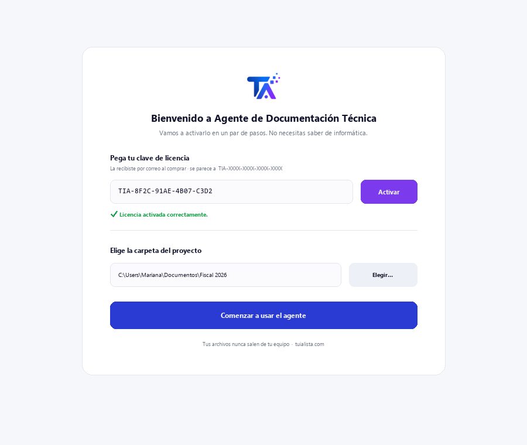
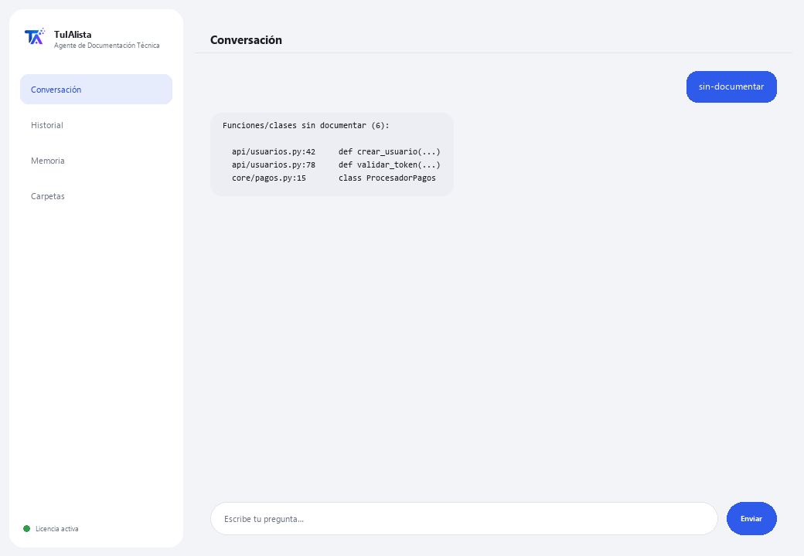

Agente de Documentación Técnica
Genera y mantiene la documentación técnica de tu software a partir de tu propio código, sin que el código salga de tu equipo.
¿Qué resuelve y qué necesitas?
La documentación siempre queda atrás: nadie tiene tiempo de escribir el README, explicar qué hace cada archivo o mantener un FAQ. Este agente escanea tu proyecto y lo hace por ti — soporta Python, JS/TS, Java, C/C++, Go, PHP, Ruby, SQL, y también RPG (AS/400/IBM i) y COBOL.
- Necesitas: tu clave de licencia (TIA-XXXX-XXXX-XXXX-XXXX) y la carpeta del proyecto. Nada de Python ni conocimientos técnicos para instalarlo (aunque está pensado para equipos de desarrollo).
- Primer resultado en menos de 5 minutos: instalas, activas, eliges tu carpeta y corres readme para tu primer README generado.
- Tu código fuente nunca sale de tu computadora — el escaneo corre localmente.
soporte@tuialista.com o entra a tuialista.com/soporte — normalmente respondemos el mismo día hábil.1 Qué hace este agente
Tú le señalas la carpeta del proyecto y él:
- Escanea el código y extrae su estructura (funciones, clases, comentarios, imports).
- Genera un README profesional del proyecto (estructura, componentes, dependencias, uso).
- Documenta un archivo específico en detalle (propósito, funciones, parámetros, notas).
- Genera un FAQ técnico con preguntas y respuestas basadas en el código.
- Detecta funciones y clases sin documentar.
- Arma un mapa de dependencias entre archivos (internas y externas).
- Responde preguntas libres sobre el código.
Soporta muchos lenguajes: Python, JavaScript/TypeScript, Java, Kotlin, C/C++, Go, PHP, Ruby, SQL, y también RPG (AS/400/IBM i) y COBOL, entre otros.
2 Instalación (2 minutos)
Para Windows. No hace falta internet permanente ni subir nada a la nube.
Baja el instalador desde tuialista.com/descargar (agente Documentación Técnica) y ábrelo. Crea un acceso directo en tu escritorio con el logo — no requiere Python ni terminal.
Doble clic al ícono nuevo. Pega tu clave de licencia (te llegó por correo al comprar) y pulsa Activar. Verás una palomita verde cuando sea válida.
Selecciona la carpeta del proyecto y pulsa Comenzar a usar el agente. La próxima vez arranca directo — recuerda tu clave y tu carpeta.

3 Cómo usarlo
El agente abre una ventana de chat, como una app de mensajería — no es una pantalla negra de programador. Escribes tu comando o tu pregunta en el cuadro de texto de abajo, pulsas Enviar (o Enter), y la respuesta aparece como un mensaje, igual que en esta imagen real:

Los comandos siguientes son las palabras que puedes escribir en ese mismo cuadro de texto:
> readmeREADME.md profesional con nombre, estructura, componentes principales, cómo se relacionan, dependencias e instrucciones de uso.
> faqDe 8 a 12 preguntas frecuentes técnicas (arquitectura, cómo funciona algo, cómo cambiar funcionalidad...) con respuestas basadas en tu código.
> documentar <archivo>Documentación en detalle de un archivo: propósito, cada función/procedimiento (qué hace, parámetros, retorno), dependencias y notas.
> sin-documentarFunciones y clases sin comentarios ni docstring, con archivo y línea.
> dependenciasMapa de dependencias: por archivo, qué módulos internos del proyecto y qué librerías externas usa.
> analizar <archivo>Estructura detectada de un archivo (clases, funciones con su línea, imports) sin llamar a la IA.
> ¿pregunta libre?Escribe cualquier duda en lenguaje natural, ej.: ¿dónde se valida el token de sesión?
> salirTermina la sesión (también funciona exit).
4 Ejemplos de uso común
Documentar un proyecto nuevo
readme → faq
Entender un archivo heredado
analizar legacy/proceso.cbl → documentar legacy/proceso.cbl — funciona incluso con COBOL o RPG de sistemas AS/400.
Revisar la deuda de documentación
sin-documentar
Orientarte en el código
¿cómo se conecta la aplicación a la base de datos?
5 Preguntas frecuentes
¿Mi código se sube a internet?
¿Qué lenguajes soporta?
¿Necesito instalar librerías extra?
¿Omite carpetas como node_modules?
¿Modifica mi código o escribe archivos?
¿Qué tan grande puede ser el proyecto?
¿Sirve para código AS/400 (RPG/COBOL)?
¿En qué idioma responde?
¿La documentación es 100% correcta?
¿Puedo documentar un solo archivo sin escanear todo?
6 Solución de problemas
Muestra “0 archivos indexados”
No encuentra un archivo con documentar/analizar
El README ignora algunos archivos
Dice “Licencia no válida” o pide reconectar
“No hay proveedores de IA configurados”
¿Ninguna de estas soluciones resolvió tu problema? Escríbenos directamente — con gusto lo revisamos contigo.
soporte@tuialista.com o entra a tuialista.com/soporte — normalmente respondemos el mismo día hábil.7 Privacidad y confidencialidad
Tu código fuente nunca sale de tu computadora.
- El agente escanea el proyecto y extrae su estructura localmente, en tu propio equipo. No sube tu código a ningún servidor.
- La detección de estructura, la deuda de documentación (sin-documentar) y el mapa de dependencias se calculan en tu máquina.
- Lo único que viaja por internet es: (1) una comprobación de que tu licencia está activa — que no incluye tu código —, y (2) al generar README, FAQ, documentar un archivo o responder una pregunta, se envían fragmentos del código (los más relevantes) al motor de IA para redactar el texto.